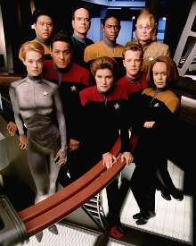
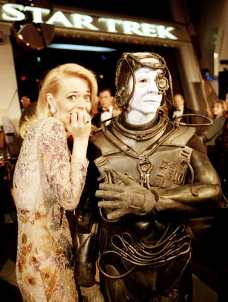
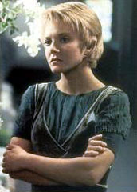
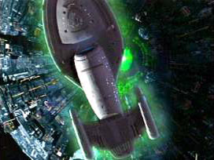
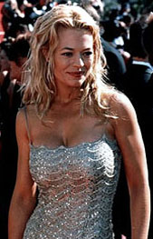
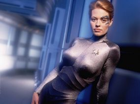
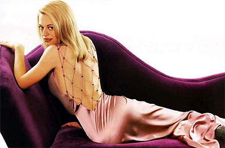
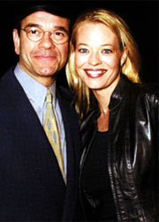

|
por Daniel
Sasaki e Fernando Penteriche
 Brannon Braga e Ronald D. Moore foram os roteiristas que trouxeram os Borg de volta no filme
Jornada nas Estrelas: Primeiro Contato em 1996. Mediante o sucesso alcanado, Braga ficou determinado a trazer os Borgs tambm para
Voyager. Aps assistir na televiso uma chamada para o episdio
"Unity", escrito por Ken Biller e que colocava pela primeira vez os viles cibernticos no caminho de Janeway, Braga teve a idia de criar um final de temporada envolvendo Borgs e um novo tripulante dessa raa que entraria para o elenco fixo da srie.
"Eu expliquei minha idia a Joe Menosky para ter certeza de que no era algo muito estpido. Depois falei com Rick Berman e Jeri Taylor, que adoraram a idia. Rick falou que o novo personagem teria de ser uma mulher, e comeamos tudo partir da.", explica Brannon Braga.
 Os produtores comearam ento a seleo da atriz que entraria na srie, e aps ficarem com trs finalistas, a loira Jeri Ryan, recm sada da srie "Dark Skies", foi a escolhida. Sendo ela uma mulher extremamente sexy, j era esperado que causasse alguma polmica, mas ainda de acordo com Braga isso seria muito bom para divulgar mais ainda
Voyager. Muitos fs, antes mesmo de verem o primeiro episdio com o personagem, chamado ento de Seven of Nine, j reclamavam pela internet. Aps verem o uniforme justssimo e sensual da bela atriz, temiam que
Voyager se transforma-se em um "Baywatch" espacial.
Ao mesmo tempo que uma atriz chegava, outra estava indo embora. A sada da srie de Jennifer Lien, a Ocampa Kes, causou um certo desconforto no elenco. Chakotay, interpretado pelo sempre polmico Robert Beltran, no gostou muito da dispensa da atriz, mas entendeu. "Ns eramos muito prximos, uma famlia, e fiquei chateado pela sada de Jenny. Porm os roteiristas nunca tinham muito o que fazer com o personagem dela. Exceto pelos pouqussimos episdios em que era protagonista, Kes foi uma coadjuvante de luxo durante esses trs anos", disse o ator. Roxann Dawson, a B'Elanna Torres, tambm expressou seu ponto de vista. "Eu estaria mentindo se dissesse que foi fcil ver Jennifer indo embora. Ns a amamos, ela muito talentosa. Porm a entrada de um novo personagem como a de Jeri Ryan causa muitas novidades, e boas, para nossa srie. um preo que temos de pagar".
 Mas quem pagou o preo sozinha foi Jennifer Lien. Houve boatos de que ela havia sido dispensada pois envolveu-se com drogas, o que nunca foi provado. At hoje muitos fs discutem se no seria melhor que Harry Kim fosse o personagem escolhido para deixar
Voyager, porm uma rpida olhada nos episdios da srie at ento mostram claramente que Kes era muito mais dispensvel do que Kim. A verdade sobre sua sada parece clara, pois com a entrada de outra atriz no elenco fixo, os produtores mandaram Jennifer embora para economizar. Kes ainda voltaria a
Voyager no episdio do 6 ano chamado "Fury" (veja box), e de consenso geral que seria muito melhor que ela no voltasse nunca mais depois de sua despedida em
"The Gift", segundo episdio da 4 temporada.
Seven
cumpre o prometido
Desde sua estria em 1997 no primeiro episdio da 4 temporada,"Scorpion,
Part II", Seven of Nine exerceu forte influncia no destino de
Voyager e foi dividindo a j polarizada audincia da maior franquia de fico cientfica que existe.
 Essa nova segmentao aconteceu, em parte, porque muitos viram a entrada de um tripulante Borg fixo como uma banalizao imperdovel de uma das maiores e mais provocantes criaes do universo trekker. Outros, por outro lado, mantiveram que Seven of Nine revitalizou as tramas e interaes entre os personagens na nave a tal ponto que pode ser considerada a salvadora da srie. H ainda muitos outros que, aparentemente, parecem gostar dela por outras razes "menos" evidentes - algo a ver com o traje fornecido pelo departamento de figurino e as prioridades do diretor de iluminao do seriado.
Sobre essa questo, a prpria Jeri Ryan, falou em entrevista rede BBC. "A sexualidade descarada da roupa, no tive problemas com ela. No tive problemas, por causa da forma como a personagem foi escrita", disse. "Se ela tivesse sido escrita como todos achavam que seria, quando vi as primeiras fotos dela, ento, sim, teria tido um grande problema para interpretar aquela personagem (...) Mas ela era brilhante. Ela forte, um modelo maravilhoso para as mulheres jovens. Ns temos mulheres inteligentes de todas as formas fsicas, ento por que no deveramos ver isso retratado na televiso"?
 "O que legal em Seven of Nine que ela era ao mesmo tempo inocente e corrupta", acrescentou Brannon Braga, produtor-executivo de
Voyager e, mais tarde, namorado de Jeri Ryan. "Ela lembrava o Data
[A Nova Gerao] quanto inocncia, mas tambm era profundamente corrupta, uma assassina em massa. Ela era uma personagem profundamente humana, mas no tinha moral porque foi criada por lobos", conclui.
Ainda assim, nem precisa ser dito que a introduo de Seven em Voyager foi uma tentativa muito clara por parte do estdio de alavancar os nmeros da audincia, em deteriorao desde a temporada anterior. E, apesar de a personagem ter conseguido cumprir sua nobre misso, o resultado obtido foi menor do que o esperado. Levou algum tempo, mas os produtores perceberam que apenas um corpo escultural sobre saltos altssimos no convenceriam o ncleo do "fandom" trekker. A sorte que Jeri, alm de sensual, uma atriz talentosa.
 Foram muitos os episdios centrados em Seven e em quase todos eles a atuao foi impecvel.
"Scorpion, Part II", "The Gift", "Drone" e
"Dark Frontier" se sobressaem pela bela interpretao da protagonista, que, ao longo das temporadas, conseguiu balancear muito bem a frieza e meticulosidade dos impulsos Borgs com a lenta recuperao da curiosidade e compreenso humanas. tambm inegvel a sua contribuio para o legado da srie. "Ela trouxe conflito ao show, uma coisa que infelizmente faltava", disse a atriz. "Uma vez que os Maquis fizeram as pazes com Janeway e companhia, eles viraram uma grande famlia feliz. Acho que eles [os produtores] queriam muito adicionar algum conflito, porque isso que drama, isso o que torna a coisa interessante de assistir".
Certamente, houve bastante terreno para a explorao desse talento, j que, desde a sua chegada, Jeri praticamente monopolizou o tempo em tela. No toa que os fs costumam chamar o 4 ano de
Voyager de "Jornada nas Estrelas: Seven of Nine". S que, apesar de a adio da Borg sexy ter refrescado uma marca desgastada, ela tambm sacrificou o desenvolvimento dos outros personagens da srie.

O que era para ser o seriado de Jornada com o maior elenco fixo acabou se tornando uma produo apoiada basicamente em trs personagens: a capit Janeway, Seven of Nine e o Doutor. Tom Paris, Harry Kim, Chakotay, Neelix e Tuvok virtualmente desapareceram. Antropologicamente falando,
Voyager, que por princpios definidos em sua premissa no deveria enfocar a questo dos gneros, acabou se transformando em uma srie de personagens femininos fortes,
na qual os homens de nada serviam.
 Outra mudana duramente sentida pelos fs originais foi a perda da cientificidade da srie. A verossimilhana e a coerncia com a cincia nunca foram exatamente os pontos fortes de
Voyager. Mas, depois da entrada de Seven, isso passou a ser ignorado de vez. A "tecnobaboseira" comeou a imperar nos roteiros, sustentando histrias de ao e comdia. Na prtica, criou-se um novo tipo de fico cientfica, marcado pelo eterno conflito entre Janeway e Seven, o relacionamento pouco convencional entre ela e o Doutor hologrfico, e os interminveis encontros com os Borgs - dos quais a nave surpreendentemente sempre saa ilesa.
No fim das contas, Seven of Nine mudou um pouco a cara de Jornada
e serviu de incentivo a novas criaes ousadas, vide a presena de T'Pol em
Enterprise. Mas essa no foi uma alterao necessariamente negativa. Embora a sua presena na franquia tenha desagradado grande parte dos fs iniciais da srie, ela conquistou um novo contingente de telespectadores numa poca em que a marca desesperadamente precisava de uma inovao para sobreviver. Seven , antes de tudo, uma criao original de
Voyager - algo que muitos diziam faltar desde a estria do seriado.
|